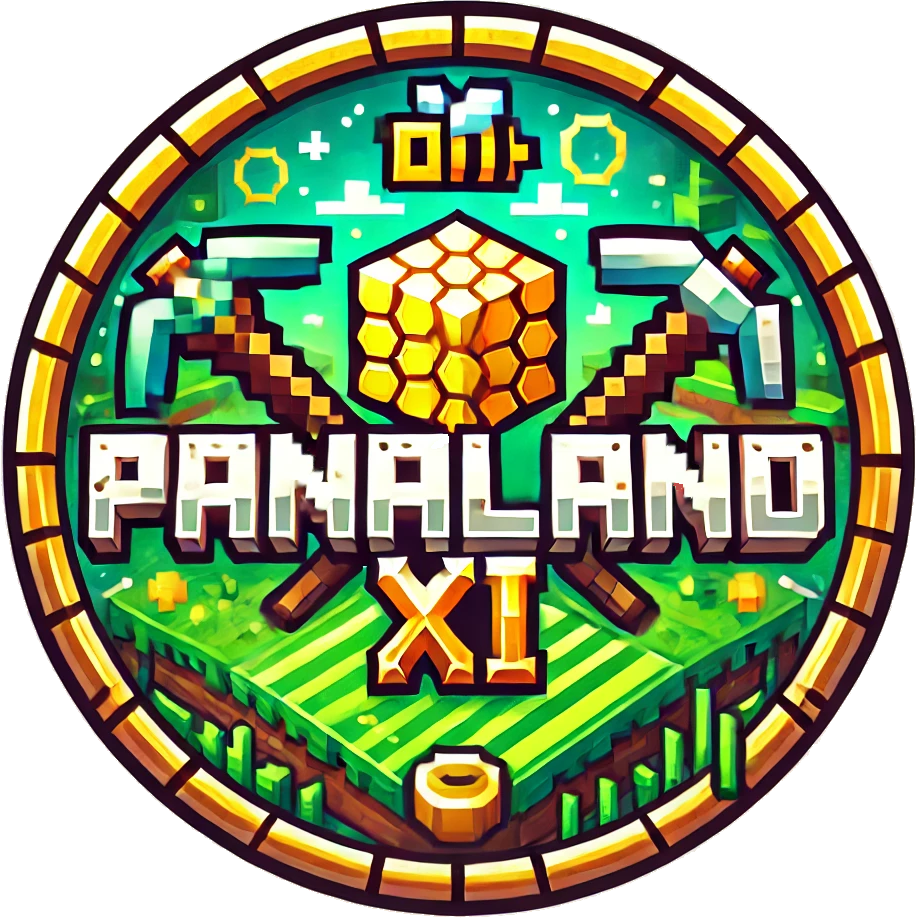

¡PRÓXIMO LANZAMIENTO!
El servidor de minecraft que todo el mundo estaba esperando
31 de Mayo, 2024
16:00 CEST
DÍAS
HORAS
MINUTOS
SEGUNDOS
¿Qué es Panaland XI?
Es la undécima edición del puto server de Sergio.
Novedades
- Nuevo mundo generado con las últimas características de Minecraft como los Happy Ghasts
- Mejor reglamento... Esta vez Paco y Nacho no harán de las suyas
- Totalmente Vanilla
- Y muchas sorpresas más...
Síguenos para más información:
Discord